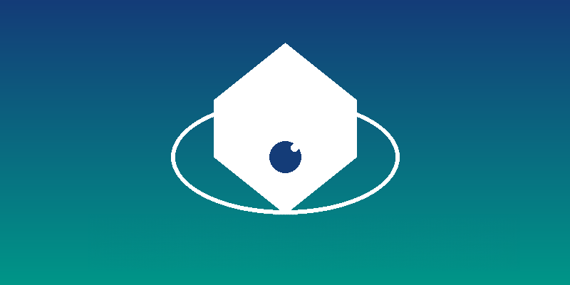
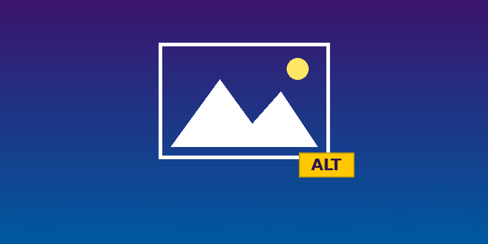
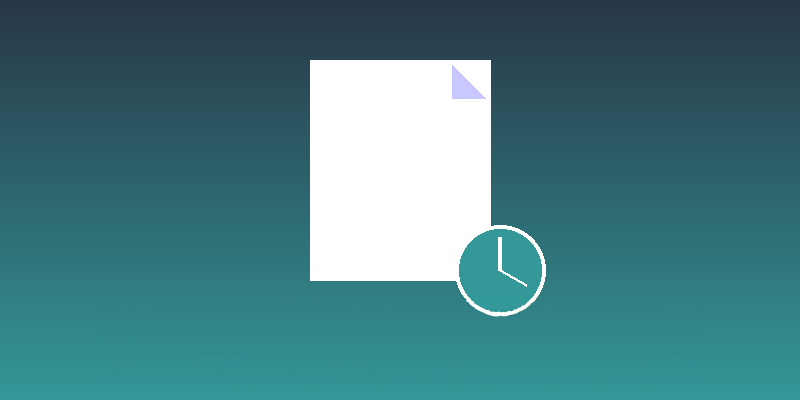

Articles 2026
Découvrez des articles perspicaces sur les meilleures pratiques d'accessibilité numérique, les journées de sensibilisation et les principes de conception inclusive. Notre collection fournit des conseils pratiques pour vous aider à créer du contenu numérique accessible pour tous les utilisateurs.
Article en vedette : Donnez une voix au contenu non textuel grâce au texte alternatif
Découvrez les meilleures pratiques pour rédiger un texte alternatif significatif pour un contenu numérique accessible.
Articles récents

Protéger vos yeux – Outils pour votre confort visuel
Découvrez des outils et des stratégies pour protéger votre vision et créer des environnements numériques confortables.

Votre signature numérique parle, alors rendez-la fantastique et accessible !
Apprenez à créer une signature électronique accessible qui vous représente, vous et votre équipe, de manière inclusive.

Sécurité numérique inclusive : là où l'accessibilité des TI rencontre la cybersécurité
Découvrez comment l'accessibilité et la cybersécurité collaborent pour créer des expériences numériques à la fois sûres et inclusives pour tous.